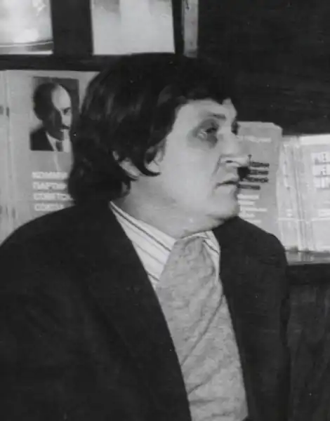

Відомий український письменник Іван Сергійович Григурко народився 25 лютого 1942 року в селі Волярка Красноокнянського району на Одещині.
Його батько загинув на фронтах Великої Вітчизняної війни, мати померла, коли хлопчику було всього три роки. Виховувався і навчався у дитячому будинку, а влітку, на канікулах, жив на селі у своїх дідуся та бабусі. На все життя збереглася в нього любов і повага до старих людей, які уособлювали для письменника досвід поколінь, безкорисливість і розуміння свого призначення у житті. Згодом Іван Григурко напише: "Я особисто схиляюся перед старими людьми. У наших дідусях та бабусях – жива віковічна мудрість".
В 1958 р. закінчив Одеський фінансово-кредитний технікум. Служба в армії теж дала добрий гарт життя. На цей час припадають перші друковані спроби рядового, а потім і сержанта Григурка. Після закінчення служби І. Григурко вступив до Одеського університету на філологічний факультет. На студентській лаві відбувається формування Івана Сергійовича як майбутнього письменника. Одержавши диплом філолога, Григурко за направленням якийсь час працює у редакціях херсонських газет "Ленінський прапор" та "Наддніпрянська правда", а згодом переїздить до Миколаєва. З-під пера письменника виходять повісті "Гавертій ", "Путина", романи "Канал" (1974), "Далекі села" (1978). Газетярська праця давала змогу спілкуватися з людьми різних професій, збагачувати життєвий досвід. З'являються повісті про сучасників. Як письменник став відомим після публікації роману "Канал" (1974), що був перекладений російською, німецькою, болгарською та іншими мовами. У 1982 р. вийшов друком роман "Ватерлінія", присвячений суднобудівникам м. Бережанська, за яким легко впізнати Миколаїв. За романом І. Григурка "Канал" створений художній фільм, в котрому головну роль виконав Іван Миколайчук. Лебединою піснею став для Григурка роман "Червона риба" (1982). Будучи смертельно хворим, в лікарні, письменник дописував останні рядки, але надрукованим твір так і не побачив. Помер 21 серпня 1982 р. в Миколаєві.